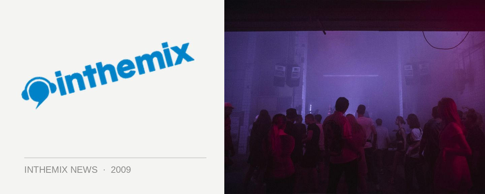

Summanights comes to Sydney this New Years Eve
The mighty Summadayze brand will be stretching its tentacles even further across the nation this New Year party season, and it will be visiting Sydney for the very first time for a party with a completely different focus. The debut Summanights will be taking over Home Nightclub on New Years Eve for an event that will take over all three levels of the club, for a party that will feature some of the hottest DJ talent featuring at the parent NYD event in Melbourne.
At the top of the bill is house and progressive star Sharam, formerly of Deep Dish fame, and he’ll be playing alongside a heavy-duty posse of house, trance and techno acts that includes Eddie Halliwell, Josh Wink, Mark Knight and heaps more.
Like the Summadayze announcement for Melbourne that hit the streets last week, it’s a lineup that’s grounded squarely in dance and DJ culture, featuring some of the its most consistent names. It’ll set to make for a massive debut of the Summadayze brand in Sydney.
Summanights comes to Darling Harbour, Sydney on Thursday December 31st 2009. Check out the full lineup below…
Sharam
Eddie Halliwell
Josh Wink
Mark Knight
Tom Novy
Don Diablo
Menno De Jong
+ more